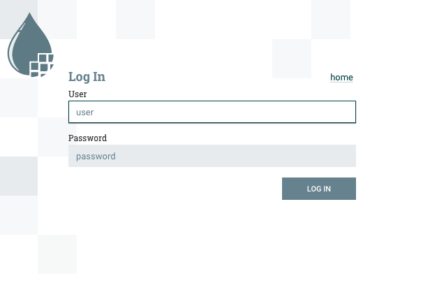

Getting Started
One of the best ways of getting started with a new platform is to try it out. Any big data platform has a lot of moving parts and getting some hands on keyboard time with it helps reinforce learning.
About this guide
Firstly, let’s cover whether this Getting Started guide is right for you. This is intended as a learning tool to discover more about Stackable, its deployment and architecture.
-
If you want to build a production cluster then this is not for you. This tutorial is to familiarise you with the Stackable architecture and is not a guide for building robust clusters.
-
This is intended for use in a private network or lab; it doesn’t enable many security features such as authentication or encryption and should not be directly connected to the Internet. Be careful if you’re deploying in the cloud as your instances may default to using public IPs.
Overview
Stackable is based on Kubernetes and uses this as the control plane to manage clusters. In this guide we will build a simple cluster with 3 services; Apache ZooKeeper, Apache Kafka and Apache NiFi.
Installing Kubernetes
Stackable’s control plane is built around Kubernetes, and we’ll give some brief examples of how to install Kubernetes on your machine.
Installing kubectl
Stackable operators and their services are managed by applying manifest files to the Kubernetes cluster. For this purpose, you need to have the kubectl tool installed. Follow the instructions here for your platform.
Installing Kubernetes using Kind
Kind offers a very quick and easy way to bootstrap your Kubernetes infrastructure in Docker. The big advantage of this is that you can simply remove the Docker containers when you’re finished and clean up easily, making it great for testing and development.
If you don’t already have Docker then visit Docker Website to find out how to install Docker. Kind is a single executable that performs the tasks of installing and configuring Kubernetes for you within Docker containers. The Kind Website has instructions for installing Kind on your system.
Once you have both of these installed then you can build a Kubernetes cluster in Docker. We’re going to create a 2 node cluster to test out Stackable, one node hosting the Kubernetes control plane and the other hosting the Stackable services.
kind create cluster --name quickstart --config - << EOF
---
kind: Cluster
apiVersion: kind.x-k8s.io/v1alpha4
nodes:
- role: control-plane
- role: worker
kubeadmConfigPatches:
- |
kind: JoinConfiguration
nodeRegistration:
kubeletExtraArgs:
node-labels: node=quickstart-1
EOFInstalling Kubernetes using K3s
K3s provides a quick way of installing Kubernetes. On your control node run the following command to install K3s:
curl -sfL https://get.k3s.io | sh -s - --node-label 'node=quickstart-1' --write-kubeconfig-mode 644So long as you have an Internet connection K3s will download and automatically configure a simple Kubernetes environment.
Create a symlink to the Kubernetes configuration from your home directory to allow tools like Helm to find the correct configuration.
mkdir ~/.kube
ln -s /etc/rancher/k3s/k3s.yaml ~/.kube/configTesting your Kubernetes installation
To check if everything worked as expected you can use kubectl cluster-info to retrieve the cluster information. The output should look similar to:
Kubernetes control plane is running at https://127.0.0.1:6443 CoreDNS is running at https://127.0.0.1:6443/api/v1/namespaces/kube-system/services/kube-dns:dns/proxy Metrics-server is running at https://127.0.0.1:6443/api/v1/namespaces/kube-system/services/https:metrics-server:/proxy
Installing Stackable
Install stackablectl
Install the Stackable command line utility stackablectl by following the installation steps for your platform on the installation page.
Installing Stackable Operators
The Stackable operators are components that translate the service definitions deployed via Kubernetes into deploy services on the worker nodes. These can be installed on any node that has access to the Kubernetes control plane. In this example we will install them on the controller node.
Stackable operators can be installed using stackablectl. Run the following commands to install ZooKeeper, Kafka and NiFi from the Stackable 22.06 release.
stackablectl release install -i zookeeper -i kafka -i nifi -i secret 22.06Using Helm instead
| These examples assume Helm version 3. They will not work with Helm version 2. |
Add the stackable-stable Helm Chart repository:
helm repo add stackable-stable https://repo.stackable.tech/repository/helm-stable/Install the operators:
helm install zookeeper-operator stackable-stable/zookeeper-operator --version=0.10.0
helm install kafka-operator stackable-stable/kafka-operator --version=0.6.0
helm install secret-operator stackable-stable/secret-operator --version=0.5.0
helm install nifi-operator stackable-stable/nifi-operator --version=0.6.0You can check which operators are installed using stackablectl operator installed:
OPERATOR VERSION NAMESPACE STATUS LAST UPDATED kafka 0.6.0 default deployed 2022-06-30 17:01:17.552606 +0100 BST nifi 0.6.0 default deployed 2022-06-30 17:01:31.895733 +0100 BST secret 0.5.0 default deployed 2022-06-30 17:07:48.542761 +0100 BST zookeeper 0.10.0 default deployed 2022-06-30 17:01:47.032154 +0100 BST
Deploying Stackable Services
At this point you’ve successfully deployed Kubernetes and the Stackable operators we need and are ready to deploy services to the cluster. To do this we provide service descriptions to Kubernetes for each of the services we wish to deploy.
Apache ZooKeeper
We will deploy an Apache ZooKeeper instance to our cluster.
kubectl apply -f - <<EOF
---
apiVersion: zookeeper.stackable.tech/v1alpha1
kind: ZookeeperCluster
metadata:
name: simple-zk
spec:
servers:
roleGroups:
primary:
replicas: 1
config:
myidOffset: 10
version: 3.8.0-stackable0
EOFApache Kafka
We will deploy an Apache Kafka broker that depends on the ZooKeeper service we just deployed. The zookeeperReference property below points to the namespace and name we gave to the ZooKeeper service deployed previously.
kubectl apply -f - <<EOF
---
apiVersion: kafka.stackable.tech/v1alpha1
kind: KafkaCluster
metadata:
name: simple-kafka
spec:
version: 2.8.1-stackable0
zookeeperConfigMapName: simple-kafka-znode
brokers:
roleGroups:
brokers:
replicas: 1
---
apiVersion: zookeeper.stackable.tech/v1alpha1
kind: ZookeeperZnode
metadata:
name: simple-kafka-znode
spec:
clusterRef:
name: simple-zk
namespace: default
EOFApache NiFi
We will next deploy an Apache NiFi server.
kubectl apply -f - <<EOF
---
apiVersion: zookeeper.stackable.tech/v1alpha1
kind: ZookeeperZnode
metadata:
name: simple-nifi-znode
spec:
clusterRef:
name: simple-zk
---
apiVersion: v1
kind: Secret
metadata:
name: nifi-admin-credentials-simple
stringData:
username: admin
password: AdminPassword
---
apiVersion: nifi.stackable.tech/v1alpha1
kind: NifiCluster
metadata:
name: simple-nifi
spec:
version: 1.16.3-stackable0.1.0
zookeeperConfigMapName: simple-nifi-znode
config:
authentication:
method:
singleUser:
adminCredentialsSecret: nifi-admin-credentials-simple
autoGenerate: true
sensitiveProperties:
keySecret: nifi-sensitive-property-key
autoGenerate: true
nodes:
roleGroups:
default:
config:
selector:
matchLabels:
kubernetes.io/os: linux
log:
rootLogLevel: INFO
replicas: 1
EOFYou can check the status of the services using kubectl get pods. This will retrieve the status of all pods running in the default namespace.
NAME READY STATUS RESTARTS AGE nifi-operator-deployment-64c98c779c-nw6h8 1/1 Running 0 24m kafka-operator-deployment-54df9f86c7-psqgd 1/1 Running 0 24m zookeeper-operator-deployment-767458d4f5-2czb9 1/1 Running 0 24m secret-operator-daemonset-pddkv 2/2 Running 0 24m simple-zk-server-primary-0 1/1 Running 0 23m simple-kafka-broker-brokers-0 2/2 Running 0 21m simple-nifi-node-default-0 1/1 Running 0 22m
Since this is the first time that each of these services has been deployed to these nodes, it will take some time to download the software from the Stackable repository and deploy the services. Once all of the pods are in the running state your cluster is ready to use.
Testing your cluster
If all has gone well then you will have successfully deployed a Stackable cluster and used it to start three services that should now be ready for you.
Apache ZooKeeper
We can test ZooKeeper by running the ZooKeeper CLI shell. The easiest way to do this is to run the CLI shell on the pod that is running ZooKeeper.
kubectl exec -i -t simple-zk-server-primary-0 -- bin/zkCli.shThe shell should connect automatically to the ZooKeeper server running on the pod. You can run the ls / command to see the list of znodes in the root path, which should include those created by Apache Kafka and Apache NiFi.
[zk: localhost:2181(CONNECTED) 0] ls / [nifi, znode-17b28a7e-0d45-450b-8209-871225c6efa1, zookeeper]
Apache Kafka
To test Kafka we’ll create a topic, and verify that it was created. First create the topic with the following command:
kubectl exec -i -t simple-kafka-broker-brokers-0 -c kafka -- \
bin/kafka-topics.sh --bootstrap-server localhost:9092 --create --topic demoYou should see the message, "Created topic demo." on the console. Now let’s check to see if it was actually created:
kubectl exec -i -t simple-kafka-broker-brokers-0 -c kafka -- \
bin/kafka-topics.sh --bootstrap-server localhost:9092 --listApache NiFi
Apache NiFi provides a web interface and the easiest way to test it is to view this in a web browser.
To access the web interface we first need to get the ip address and port Nifi is listening on.
To get the IP address we need to connect to (in this case 172.18.0.2), run:
kubectl get nodes --selector=node=quickstart-1 -o wideNAME STATUS ROLES AGE VERSION INTERNAL-IP EXTERNAL-IP OS-IMAGE KERNEL-VERSION CONTAINER-RUNTIME quickstart-worker Ready <none> 45m v1.21.1 172.18.0.2 <none> Ubuntu 21.04 5.15.0-25-generic containerd://1.5.2
With the following command we get the port (in this case 30247):
kubectl get svc simple-nifiNAME TYPE CLUSTER-IP EXTERNAL-IP PORT(S) AGE simple-nifi NodePort 10.43.75.25 <none> 8443:30247/TCP 49m
Browse to the address of your Kubernetes node on port 30247 e.g. https://172.18.0.2:30247/nifi and you should see the NiFi login screen.

The Apache NiFi operator will automatically generate the admin user credentials with a random password and store it as a Kubernetes secret in order to provide some security out of the box. You can retrieve this password for the admin user with the following kubectl command.
kubectl get secrets nifi-admin-credentials-simple \
-o jsonpath="{.data.password}" | base64 -d && echoOnce you have these credentials you can log in and you should see a blank NiFi canvas.